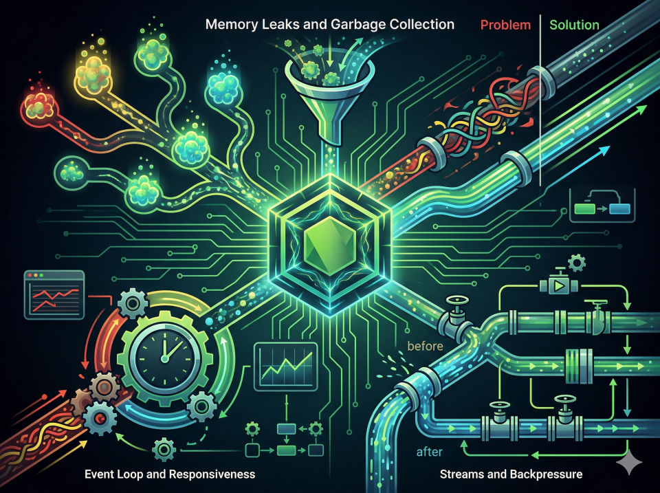
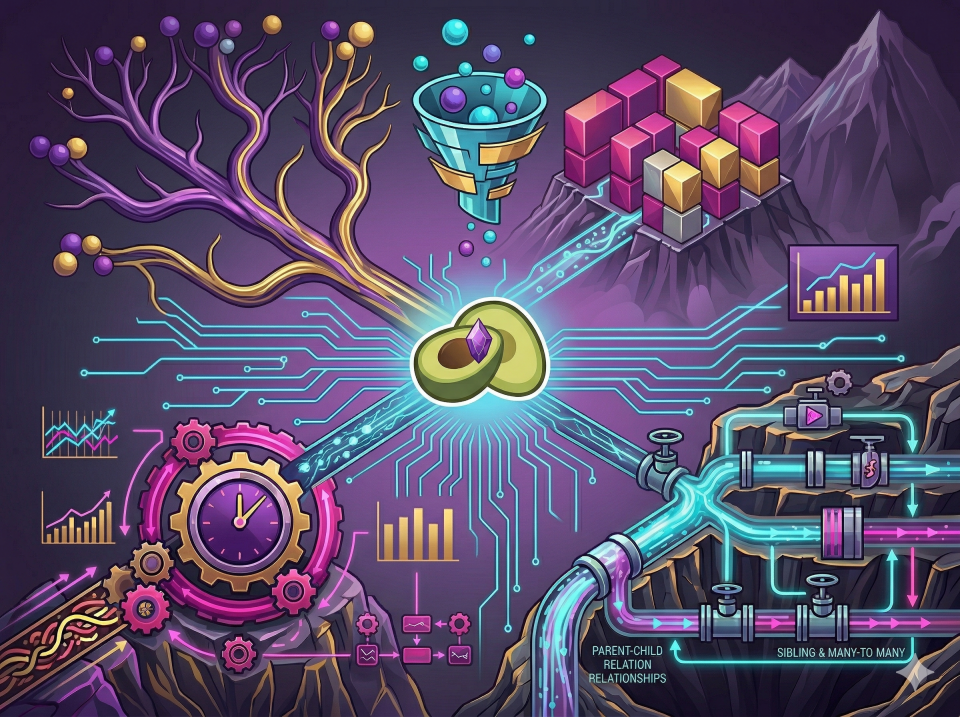
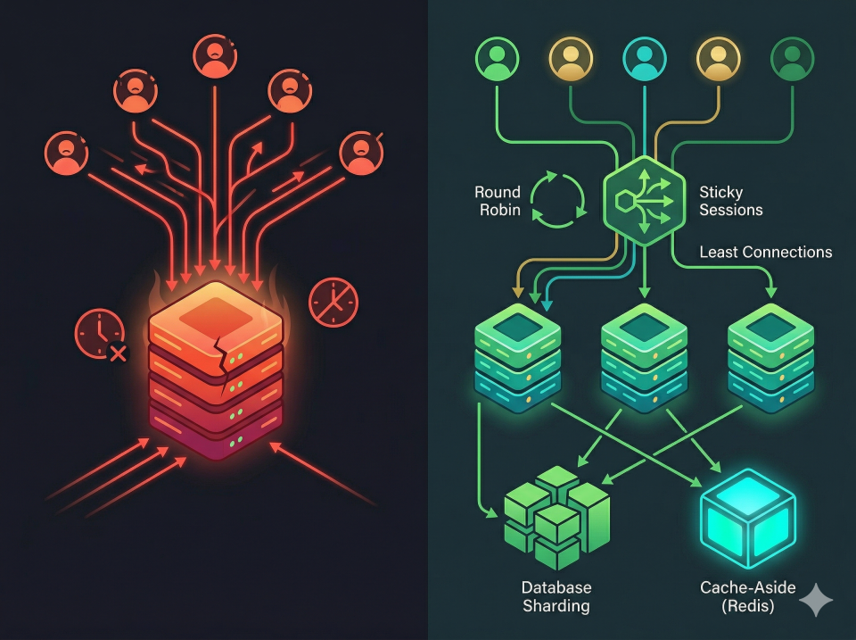

Projects
Node.js Performance Gotchas

- A comprehensive, hands-on tutorial for identifying and fixing memory leaks, event loop blocking, and stream backpressure.
- Features real-world side-by-side 'Problem' vs 'Solution' implementations in an Express.js API.
- Includes automated testing scripts to demonstrate V8 garbage collection behavior and system responsiveness.
NodejsExpressTypescriptPerformanceStreamsV8
ArangoDB Edge Patterns in ERP

- A comprehensive showcase of advanced ArangoDB edge collection patterns for hierarchical relationships and graph operations in enterprise ERP systems.
- Features practical implementations of category trees, warehouse node hierarchies, and complex multi-level traversal queries using AQL.
- Includes a production-ready Express.js API with TypeScript models and performance-optimized query templates for real-time data aggregation.
ArangoDBExpressTypeScriptGraphERPAQLNodejs
FlashScale — Flash Sale System Design

- A hands-on Node.js/TypeScript project demonstrating core system design patterns for high-availability scenarios.
- Implements Database Sharding, Cache-Aside (Redis), and Load Balancing (Round Robin, Sticky Sessions, Least Connections).
TypescriptNodejsSystem DesignShardingRedisLoad Balancing
Typescript Boilerplate
- Server-side boilerplate using Typescript, MongoDB, Redis, & more...
- Fully customizable and dynamic, easily change data structure.
TypescriptNodejsExpressKoaMongoDBRedis
Javascript Boilerplate
- Server-side boilerplate using Javascript, Express, MongoDB, Redis, & more...
- Fully customizable and dynamic, easily change data structure.
JavascriptNodejsExpressMongoDBRedis